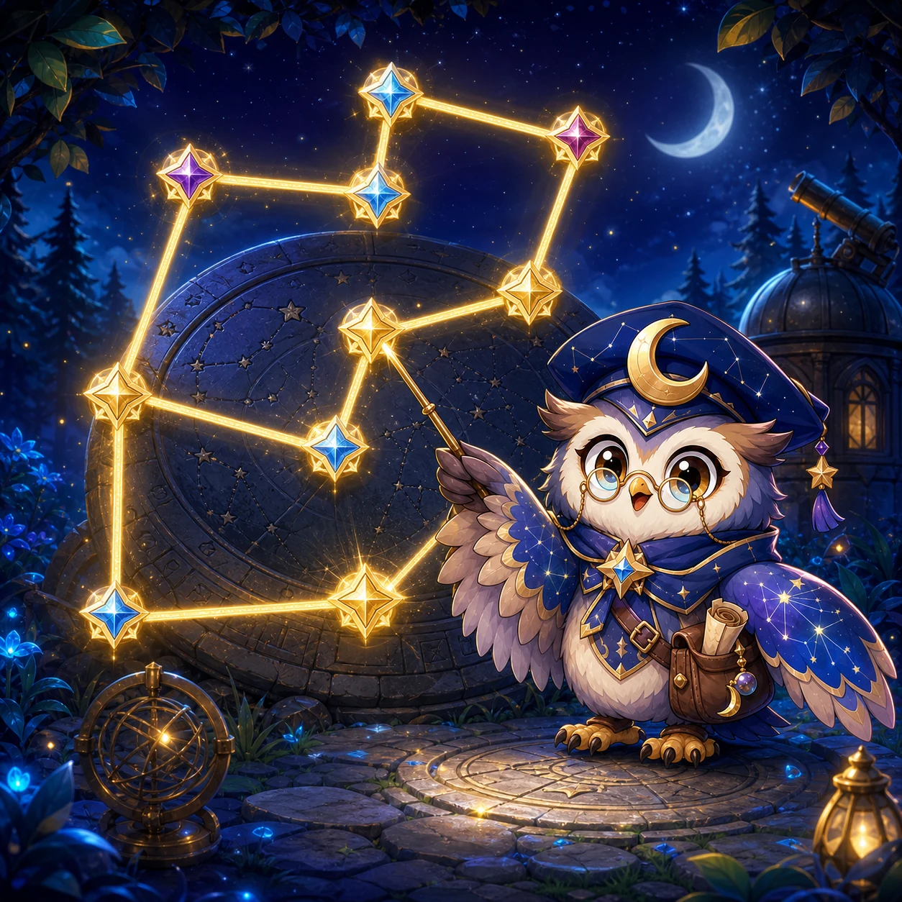

Moon Cap Orla's constellation workshop
Starlink
Trace every trail exactly once and relight the Animal Star Map.

Trace every trail exactly once and relight the Animal Star Map.
Starlink is an original thirty-stage route puzzle starring Moon Cap Orla. Select a star node, then trace connected trails until every edge has been used exactly once. A route may revisit a star, but it may never reuse the same trail. Later observatories introduce marked starting stars, one-way comet paths, numbered star seals, key-and-gate routes, and mastery constellations that combine those rules.
Stages 1–5 teach classic open trails. Stages 6–10 add a required starting seal. Stages 11–15 introduce comet arrows that can be crossed in only one direction. Stages 16–20 add numbered stars that must be reached in order. Stages 21–25 introduce a key star that opens a marked gate trail. Stages 26–30 combine the complete rule set in larger mastery constellations.
Recommended for ages 9+ and family puzzle play. A round usually takes two to six minutes. Stage unlocks, best star ratings, best times, and constellation progress are stored only in this browser. Result summaries report only route facts such as time, corrections, and hints. No account is required.
The puzzles are original graph layouts built for touch, mouse, and keyboard. The game uses one responsive logical Canvas for Stage and Battle, preserves the same puzzle information on narrow phones and wide desktop screens, and keeps the General future-banner reserve physically separate from all controls and result actions.
 Run Summary
Run Summary